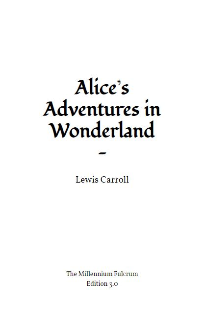
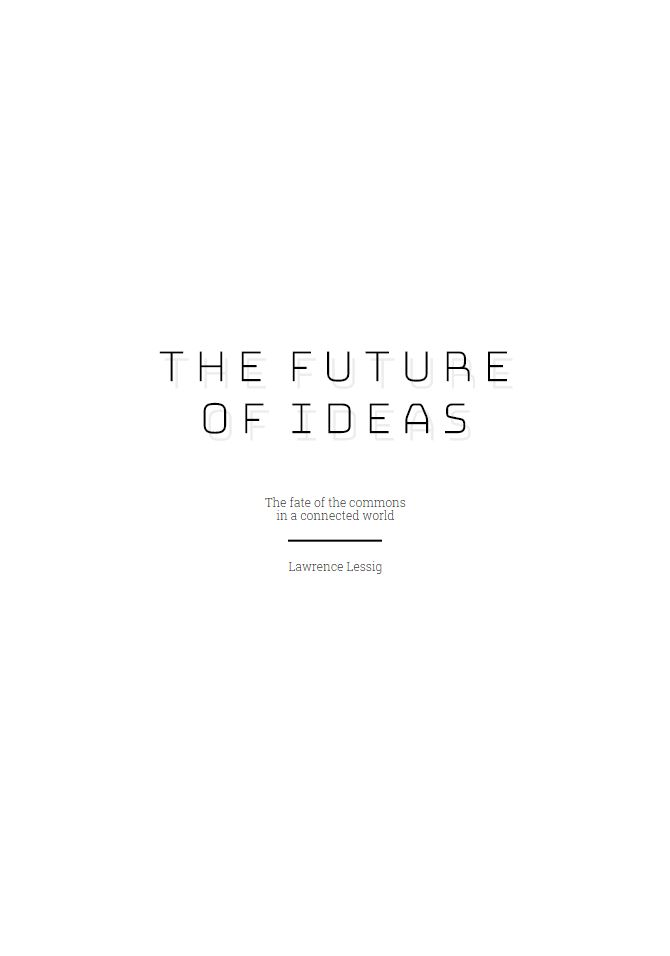
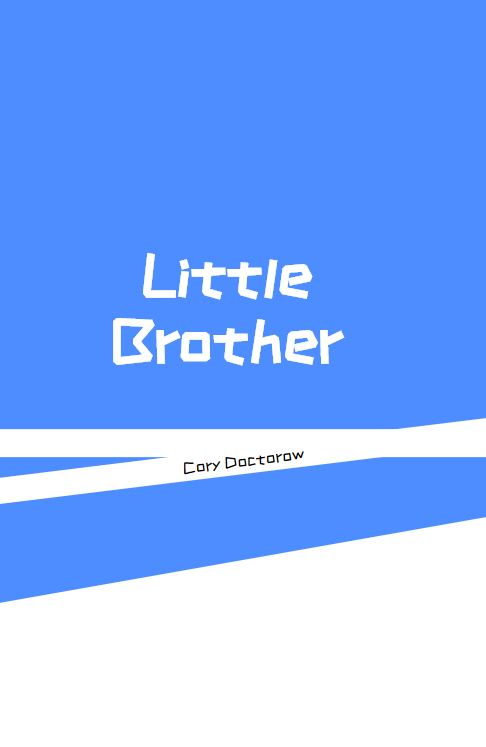

Paged Design
Customisable themes for book design with CSS
Are you creating books with HTML and CSS? Stylesheets for books can be long and complicated to write. Our themes give you a head start: pick a theme, add it to your project, and customise it.
Note that paged.js and this project are in development, so expect bugs, workarounds, and exciting possibilities, and contribute if you can.
Themes
-
Beatrix
Named for Ms Potter, a classic children's book theme for simple stories. Goes well with Alice in Wonderland.
-
Density
A space-age look for big books. Goes well with The Future of Ideas, by Lawrence Lessig.
-
Plastered
A wild and wonky look for grabbing attention. Goes well with Little Brother, by Cory Doctorow.
-
Template

A plain template with very few opinions, and the starting place for creating brand new themes. Goes well with our typography samples.
These are just a small start. If you're interested in more themes, tell us so that we know it's worth investing time in more theme development.
Sample content
This demo site includes four pieces of sample content for seeing themes at work:
- A book of sample features common to most books
- Alice in Wonderland
- The first chapter of Little Brother, by Cory Doctorow
- The first chapter of The Future of Ideas, by Lawrence Lessig.
For each one, use the theme-selector dropdown to see the browser lay out the book before your eyes. (Only Chrome can get this right currently.)
How to use a theme
Setting up
- You'll need to have NodeJS installed on your computer. Our themes are written in Sass, and you'll use Node to build that into your finished CSS.
- Download a theme package and unzip it.
- Place the unzipped theme folder in your project. We're assuming that your project is contained in a single folder (like a Git repo), in which you can add your theme folder.
- In the
headof your HTML (the content of your book), link to the compiled CSS file in your new theme folder. The path will depend on your folder structure, for example../css/beatrix/themes/beatrix/main.css:
<link rel="stylesheet" type="text/css" href="../css/beatrix/themes/beatrix/main.css"> - In the
headof your HTML, link to thepaged.jsscript, which will lay out your pages in Chrome. For instance, if you want to always link to the latest official version:<script src="https://unpkg.com/pagedjs/dist/paged.polyfill.js"></script> - Serve your HTML. For example, if you're using Node and have http-server installed, you can run
npm run http-server -p 4000in your project root folder, and visit your site at http://localhost:4000.
Customising a theme
Once you're set up:
-
Install dependencies. To do this, from the command line, in the unzipped theme folder (alongside
package.json), enter:npm installwhich will install a modules to
node_modulesthat we need in that folder. -
Start our Node script to watch for changes to your styles. To do this, in the same folder, at the command line, enter:
npm buildcssNode Sass will now be watching for changes to your styles. Every time you change a file in your theme's Sass files, your compiled CSS will automatically update and you only need to refresh your browser to see your new styles. You may need to hard refresh (Ctrl+F5 or Cmd+R).
- Set your selectors for book features in
/themes/YOURTHEME/_selectors.scss(whereYOURTHEMEis the name of the theme you’ve downloaded). - Set any new values for design variables in
/themes/YOURTHEME/_variables.scss. See the_defaultsfor the variables you can set. - Add your own Sass/CSS styles to
/themes/YOURTHEME/_styles.scss.
There are some technical docs on GitHub.
About
This project is maintained by Electric Book Works, and made possible by funding and encouragement from the Coko Foundation, the Paged Media initiative, and the Shuttleworth Foundation.
You can get the code and contribute on GitHub.